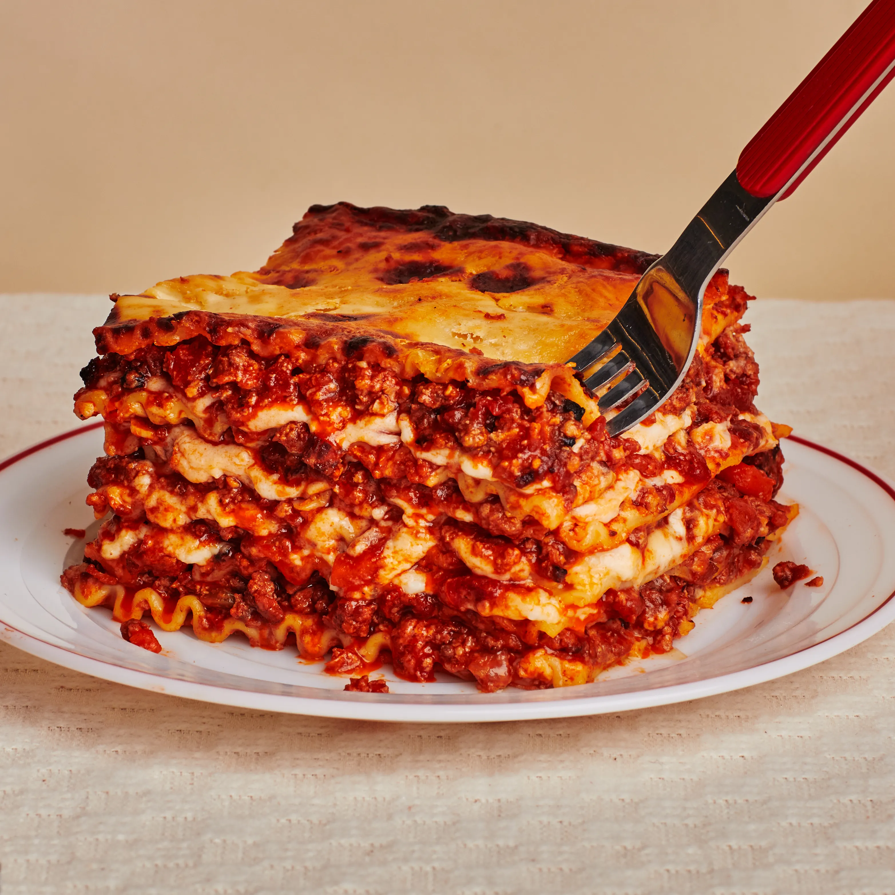

Home

Description
Lasagna is a wide, flat sheet of pasta. Lasagna can refer to either the type of noodle or to the typical lasagna dish which is a dish made with several layers of lasagna sheets with sauce and other ingredients, such as meats and cheese, in between the lasagna noodles.
Ingredients
- 1 lb (450g) ground beef
- 1/2 lb (225g) ground Italian sausage
- 1 onion, finely chopped
- 1 tsp dried oregano
Steps
-
Cook the Meat Sauce:
- Heat a large skillet or saucepan over medium heat.
- Add 1 lb ground beef and 1/2 lb ground Italian sausage. Cook until browned, breaking up the meat with a spoon.
- Add 1 chopped onion and 3 minced garlic cloves. Cook until the onion is translucent (about 5 minutes).
- Stir in 1 can (28 oz) crushed tomatoes, 2 tbsp tomato paste, and 1 can (14 oz) tomato sauce.
- Season with 1 tsp sugar, 1 tsp dried basil, 1 tsp dried oregano, salt, and pepper.
- Simmer the sauce on low heat for 20-30 minutes, stirring occasionally. Add 1/4 cup chopped fresh parsley toward the end.
-
Cook the Lasagna Noodles:
- Bring a large pot of salted water to a boil.
- Add 12 lasagna noodles and cook according to package instructions until al dente.
- Drain and lay the noodles flat on a baking sheet to prevent sticking.
-
Prepare the Ricotta Mixture:
- In a mixing bowl, combine 16 oz ricotta cheese, 1 large egg, 1/2 cup grated Parmesan cheese, 1/4 cup chopped fresh parsley, and 1/2 tsp salt.
- Stir until well mixed.
-
Assemble the Lasagna:
- Preheat the oven to 375°F (190°C).
- In a 9x13-inch baking dish, spread a thin layer of the meat sauce at the bottom.
- Add a layer of 3-4 lasagna noodles, slightly overlapping.
- Spread 1/3 of the ricotta mixture over the noodles.
- Spoon 1/3 of the meat sauce over the ricotta, and sprinkle 1 cup shredded mozzarella cheese.
- Repeat the layers two more times (noodles, ricotta, meat sauce, mozzarella).
- Finish with a final layer of noodles, remaining meat sauce, and 1/2 cup grated Parmesan cheese.
-
Bake the Lasagna:
- Cover the baking dish with aluminum foil (to prevent the cheese from burning).
- Bake in the preheated oven for 25 minutes.
- Remove the foil and bake uncovered for an additional 10-15 minutes, or until the cheese is bubbly and golden brown.
-
Rest and Serve:
- Remove the lasagna from the oven and let it rest for 10 minutes. This helps it set, making it easier to slice.
- Garnish with fresh basil if desired, and serve hot.